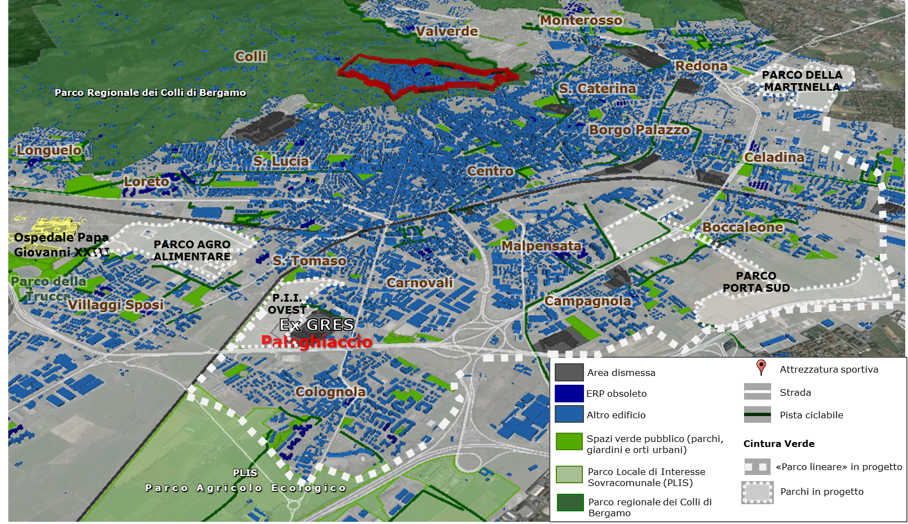
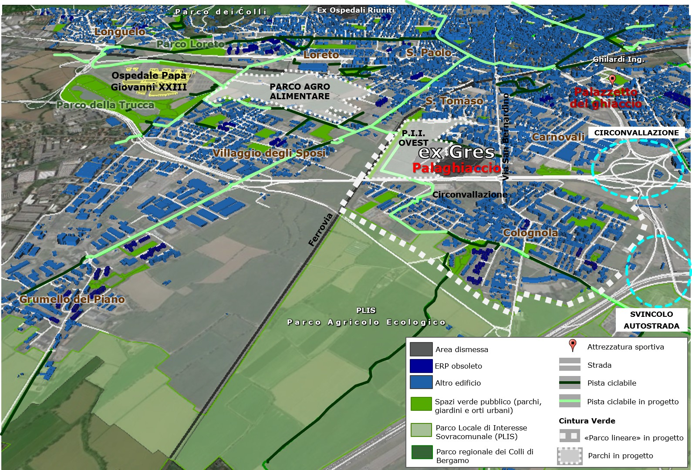

| Progettualità green: il “parco lineare” |
|  Il
progetto "cintura verde" previsto dal PGT del Comune di Bergamo
prevede la creazione di tre parchi urbani e un "parco lineare", costituito da
un tracciato ciclopedonale costeggiato da filari di alberi che, passando
attraverso parchi e giardini già esistenti nella città, creino un sistema di
connessione verde |
Il
PGT
vigente prevede la realizzazione di una "cintura verde" che dovrebbe
collegare
la parte orientale della città con la zona meridionale passando vicino
all’area dell’ex-Gres, prospettando una continuità territoriale
mediante "corridoi ecologici", al fine di costruire una rete di
mobilità e dar valore anche ai "vuoti urbani" (Gabrielli, 2010). Nello
specifico, il progetto prevede la
creazione di tre nuovi parchi urbani, denominati Stanze Verdi: il
Parco della
Trucca, dove dovrebbe nascere un parco agro-alimentare, nella fascia a
verde a ovest della ferrovia, che si allunga fino al nuovo Ospedale Papa
Giovanni XXIII congiungendosi con l’omonimo parco già esistente; il Parco di
Porta Sud, a est della città, nel quartiere Boccaleone, e il Parco della
Martinella a nord-est, tra Celadina e Redona. Queste aree verdi dovrebbero
essere collegate tra loro mediante un "parco lineare", costituito da un
tracciato ciclopedonale costeggiato da filari di alberi che, passando
attraverso parchi e giardini già esistenti nella città, creino un sistema di
connessione verde. Tale progetto, però, trova alcuni elementi di discontinuità dati dall’attuale viabilità, come la rotonda della circonvallazione Paltriniano nonché lo svincolo autostradale, nel quartiere Campagnola. Questo determina il fatto che per ora la linearità è solo una prospettiva (PGT, Documento di Piano – Relazione, 2009, p. 21). Il progetto è stato recuperato nell’ambito del programma elettorale dell’attuale Sindaco Giorgio Gori, la cui amministrazione risulta essere molto attenta alla progettazione green. In questa direzione, è stato presentato, a giugno 2015, il nuovo BiciPlan, ossia il Piano comunale strategico per la mobilità ciclistica, previsto dall’art. 3 della legge Regionale n. 7 del 30/4/2009 Interventi per favorire lo sviluppo della mobilità ciclistica. Tale piano, prospetta una riorganizzazione della mobilità ciclopedonale, con la realizzazione di nuove piste ciclabili, che consentano di completare i tracciati esistenti, oggi fortemente frammentati e disomogenei a causa delle infrastrutture. |
|  La
“cintura verde”, tema di progettazione del PGT, con evidenziazione degli ostacoli
viari presenti nella periferia sud-occidentale di Bergamo |
| Specificatamente, per quanto riguarda l’area dell’ex-Gres, il piano prevede la creazione di una pista ciclabile che attraversa l’attuale area verde situata tra l’insediamento industriale e la ferrovia, prospettando anche il superamento dei due elementi critici, tracciato ferroviario e circonvallazione, al fine di riconnettere questa zona con il resto della città. La realizzazione di tali progetti risulta essere particolarmente importante, poiché consentirebbe di recuperare il legame storico fra l’area ex-Gres e il quartiere di Colognola, oltre a favorire la connessione con altri luoghi significativi, come il nuovo Ospedale Papa Giovanni XXIII, il polo scientifico del Kilometro Rosso e la stazione di Stezzano, nonché il centro cittadino, operando nella prospettiva di sviluppare una città policentrica e polifunzionale. |